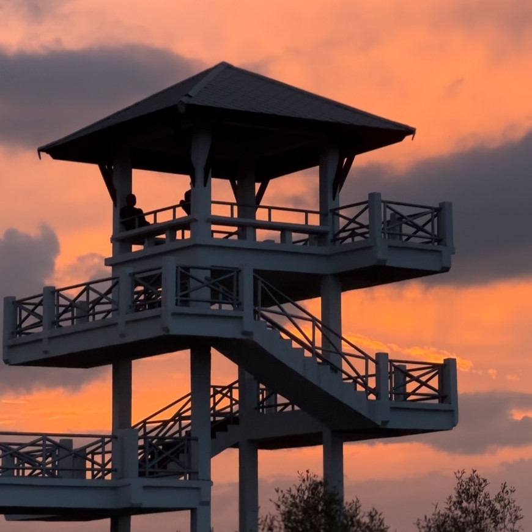
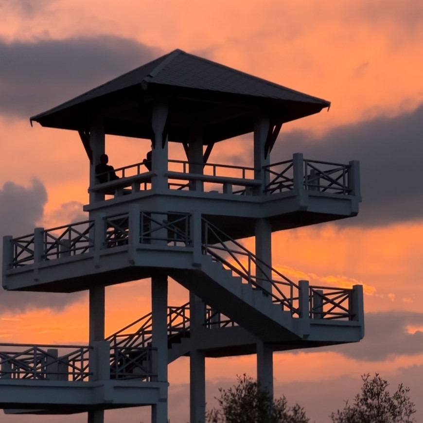

แนะนำสถานที่พักใจ ให้นักศึกษา มอ.ปัตตานี
เรียนมาหนัก ๆ เราไปดูที่พักใจแถว มอ. กันค่ะ ว่าจะมีที่ไหนบ้าง
เรียนมาหนัก ๆ เราไปดูที่พักใจแถว มอ. กันค่ะ ว่าจะมีที่ไหนบ้าง
หาดรูสะมีแล เป็นอีกหนึ่งสถานที่ที่นักศึกษา มอ. ปัตตานี นิยมไปหลังจากที่เรียนเสร็จ หากใครต้องการพักใจจากการเรียนสามารถมาที่หาดนี้ได้ เพราะพระอาทิตย์ตกที่นี่ สวยมาก แนะนำให้ทุกคนมาเยี่ยมชมกันได้ค่ะ
พิกัด: กดที่นี่เพื่อดูพิกัด
บลูเลค เป็นอีกหนึ่งสถานที่ที่เหมาะสำหรับคนที่ต้องการความสงบ หรือต้องการพักผ่อนจากการเรียน ที่นี้มีพื้นที่มากมายให้เราได้ออกกำลังกาย และสามารถเก็บบรรยากาศพระอาทิตย์ตกได้อีกด้วย
พิกัด: กดที่นี่เพื่อดูพิกัด
 

หอดูนกเป็นจุดชมวิวที่สามารถมองเห็นวิวของเมืองปัตตานีและชายฝั่งทะเล เป็นสถานที่ที่คนนิยมดูนกและชมพระอาทิตย์ตก หากใครที่มาบลูเลค ก็สามารถตรงมาที่หอดูนกได้เลย
พิกัด: กดที่นี่เพื่อดูพิกัด


สวนสมเด็จเป็นสวนสาธารณะขนาดใหญ่ใจกลางเมืองปัตตานี สามารถมาออกกำลังกาย หรือพักผ่อนได้ที่นี่ หรือจะมาถ่ายรูปชิค ๆ ตามสไตล์วัยรุ่นอย่างเรา ๆ ได้เหมือนกัน <3
พิกัด: กดที่นี่เพื่อดูพิกัด
นักศึกษา มอ.ปัตตานี